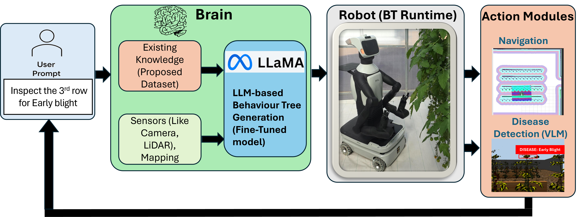
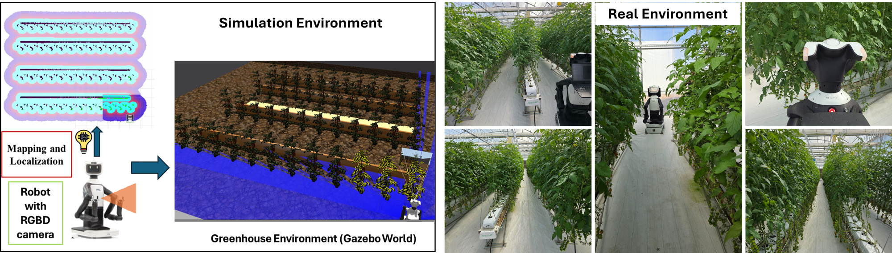

Abstract
The increasing adoption of autonomous robots in greenhouse and precision agriculture highlights a key challenge, enabling non-expert users, such as farmers and field operators, to specify complex tasks intuitively while ensuring reliable robotic execution in dynamic environments. Most existing agricultural robotics solutions rely on preprogrammed routines or handcrafted task logic, which limits their flexibility and adaptability to changing crop and environmental conditions. In addition, many learning-based planning approaches lack explicit structure and perceptual grounding, reducing their suitability for long-horizon agricultural operations. This paper addresses these limitations by proposing a unified language and vision driven task planning framework for autonomous greenhouse robotics. A domain-adapted large language model (CodeLlama-7B), fine-tuned using Low-Rank Adaptation (LoRA), translates natural-language agricultural instructions into executable, XML-based Behaviour Trees. The planner is integrated with a CLIP-based vision language model to enable perception-aware decision making during task execution. A new dataset of 1,187 pairs of task descriptions and expert-validated Behaviour Trees is curated by extending an existing robotics dataset to the agricultural domain, covering navigation, crop inspection, watering, harvesting, and disease detection of which navigation, inspection, and disease detection are experimentally validated.The framework is evaluated in an ROS 2-based simulated greenhouse across three task categories: optimised navigation, selective inspection, and vision-based disease detection. The results show 100% structural (XML) validity, 87.5% semantic correctness, and 82.0% task alignment, yielding an overall weighted validation score of 91.4%. While high accuracy is observed for simpler tasks, complex perception action sequences remain more challenging, indicating opportunities for further improvement in multi-stage task decomposition. Instruction-specific planning reduces navigation tracking error by 35.1% (from 0.208m to 0.135m), demonstrating that linguistic precision directly improves robotic execution quality. The proposed approach provides a practical, scalable interface for flexible and reliable agricultural automation.
Read the paper
You can read the full manuscript below or open it in a new tab.
Figures


Quick Start
python -m venv .venv
source .venv/bin/activate
pip install -r requirements.txt
python analysis_script.py